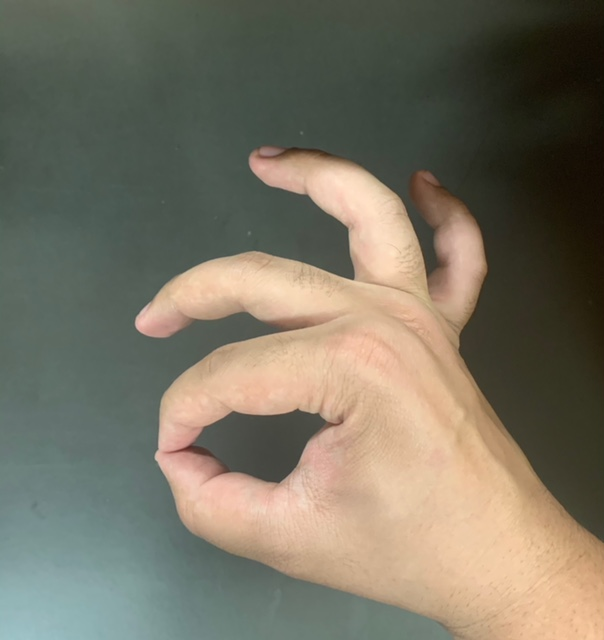
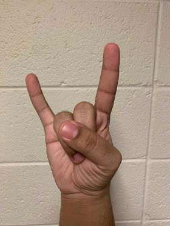
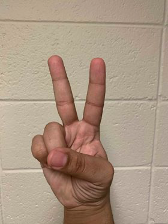
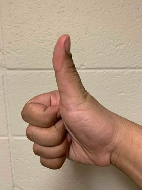

Problem Definition
Design and implement algorithms that recognize hand shapes (such as making a fist, thumbs up, thumbs down, pointing with an index finger etc.) or gestures (such as waving with one or both hands, swinging, drawing something in the air etc.) and create a graphical display that responds to the recognition of the hand shapes or gestures.
You may use OpenCV library functions in your solution. If you do so, you must understand the OpenCV function in detail -- both the mathematical formulation and the algorithm. In particular, you must be able to explain the function on a blackboard without access to the OpenCV help pages.
The algorithm should detect at least four different hand shapes or gestures. Must also use skin-color detection and binary image analysis (e.g. centroids, orientation, etc.) to distinguish hand shapes or gestures.
Create a confusion matrix to illustrate how well your system can classify the hand shapes or gestures. Create a graphical display that responds to the movements of the recognized gestures. The graphics should be tasteful and appropriate to the gestural movements. Along with the program, submit the following information about your graphics program:
- An overall description
- How the graphics respond to different hand shapes and/or gestures
- Interesting and fun aspects of the graphics display
Method and Implementation
General Outline of the Hand Sign Recognition Algorithm
- The primary computer vision we used in this assignment that were discussed in lecture was skin-color detection (e.g., thresholding red and green pixel values) and template matching (e.g., create templates of a closed hand and an open hand).
- We first processed the image templates by making skinDetection templates using the mySkinDetect function we learned from Lab 3 and then we found the largest coutour in each template so we can then draw the contour and its outline in a new image; that image being the contour image template outlined in green.
- The algorithm creates four vector point contour for the four frames we're going to capture from the webcam and apply the skinDetection on these images as well.
- It then applies the MatchingMethod we wrote down at the bottom of the file to calculate the contour image from the mySkinDetect webcam frames.
- Using the matchShapes function from the OpenCV libary, it calculates an array of four coefficients each representing how similar the webcamera frame is to each corresponding image template.
- It then chooses the highest coefficient and deem that to be the most similar image template to the hand gesture shown on the webcamera.
Experiments
The goal of my experiment is to recongnize four different hand shape, the template for each hand shape are listed in the table below
| Name | Image Template |
|---|---|
| Okay Hand Sign |  |
| Rock & Roll Hand Sign |  |
| Peace Hand Sign |  |
| Thumbs Up Hand Sign |  |
Experiment Variables
Experiment Environment: Windows 7 Ultimate x64 Machine Applications: Visual Studio 2017 Community Version, OpenCV 3.2, C++ Programming Language Average Exection Time of Code: 10 seconds Process Memory Rate: 75 MBs/second CPU (% of all processors): approx. 70% Setting: BU Mugar Memorial Libary 2nd Floor
Results
Here are screeshots of the algorithm recognizing all four hand signs:
| Hand Sign Name | Result |
|---|---|
| Okay |  |
| Rock & Roll |  |
| Peace |  |
| Thumbs Up |  |
We've a confusion matrix running 40 trials from this experiment by changing our hand signs slightly to see what will the program recognize it as. Here are the results:
| True Class | |||||
|---|---|---|---|---|---|
| Hypothesized Class | Hand Shape | Okay | Peace | Rock n' Roll | Thumbs Up |
| Okay | 6 | 1 | 0 | 1 | |
| Peace | 2 | 7 | 3 | 1 | |
| Rock n' Roll | 1 | 2 | 6 | 1 | |
| Thumbs Up | 1 | 0 | 1 | 7 | |